| Report: The Successful Ale Delivery Commander's Log: 15th January 2005 I am pleased to report that last night's ale delivery, escorted by the Baron's Militia from Yew to Cove, was a complete success.
* Ale was delivered safely to Cove. It all began at the Yew Brewery, "Ye Olde Winery", located just beside Empath Abbey. The Militia met with a senior merchant of the Brewery, named Avery Lyndon. Mr. Lyndon transferred the cargo to a selected beastmaster, which at the start was Recruit Teclus.
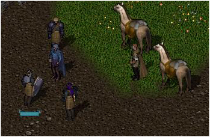
The merchant passed a piece of parchment to myself and bid farewell to the
Covian escort. We set off at a slow march and maintained a steady group;
with Junior Irregular Donwin following at the rear of the escort, and myself
leading it.
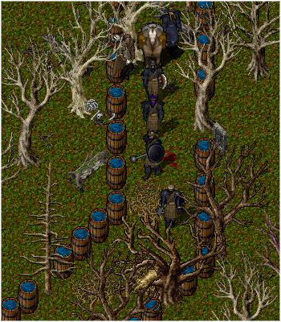
Stonekeep, the outpost of the infamous Guardsmen Militia of Yew. We were
met with the sight of the tall and fine citadel that stands true at the heart
of Yew, and a raised platemail glove.
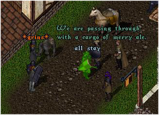
Passing through Stonekeep left a certain chill in the air, as it is greatly
renowned that bandits and other vile folk stalk the roads of Yew incessantly.
However, the spirit of the Covian escort was high, with the addition of a
wandering gorilla who seemed to have taken a liking to the party.
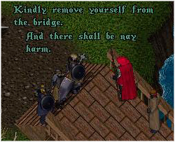
However, the man dressed in red was soon identified by the Covians as the
infamous Rex Richter, known for much crime and other despicable acts in and
around Cove. The order for him to be seized was given, but the bandit had
other ideas. "NOW!!" The robed man seen previously before threw back his
hood and let off a surge of magical energy, directed aptly at the escort.
At that, another bandit leapt from beneath the bridge and engaged the guardsmen
in melee combat.
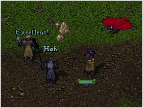
A win for the Covian escort, which also managed to release a lady who had
been imprisoned by the vile brigands, and who came under swift care and concern
from Church Squire Geoffrey. The delivery caravan was nearing Cove, and the delight of the guardsmen could be seen on their faces, some even licking their lips at the prospect of some fresh Yew ale. They passed several abandoned guardposts, and the crossroads linking Yew with Britain and Vesper. However, a challenge from the notorious outlaws of Britannia still awaited. Continuing along the roads found the Covian escort in some unwanted territory.
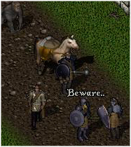
"Beware...
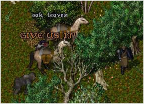 However, the numbers of the assaulting party were too few to match the Militia escort, and were quickly disposed of. Wondering where the caravan had been (as I was back at Cove), Sacrow and myself went in search of the delivery party, with a surprising story to hear.
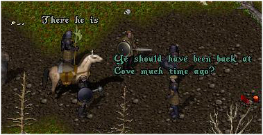 From here on in the caravan was fairly safe, despite another minor skirmish with some random, wandering brigands who were easy to defeat.
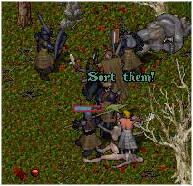 And so, the Militia escort of the ale delivery caravan came to an end. It had been a successful journey, and one that shall be remembered for many days to come. The persistant harrassment from bandits and brigands along the road has enticed the thought of a greater span of patrolling, as these hideous criminals must be brought to justice.
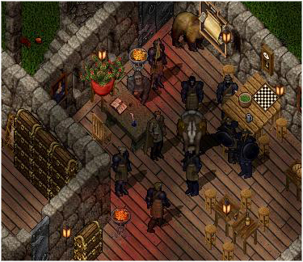 A fine effort all round, particularly with the new Recruits, who showed both courage and discipline in following orders, and meeting opponents in battle.
Well done.
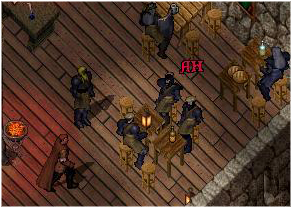 |